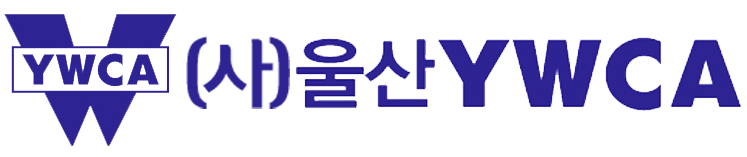
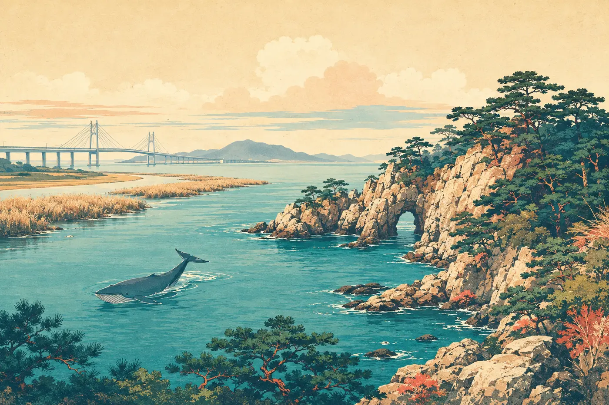
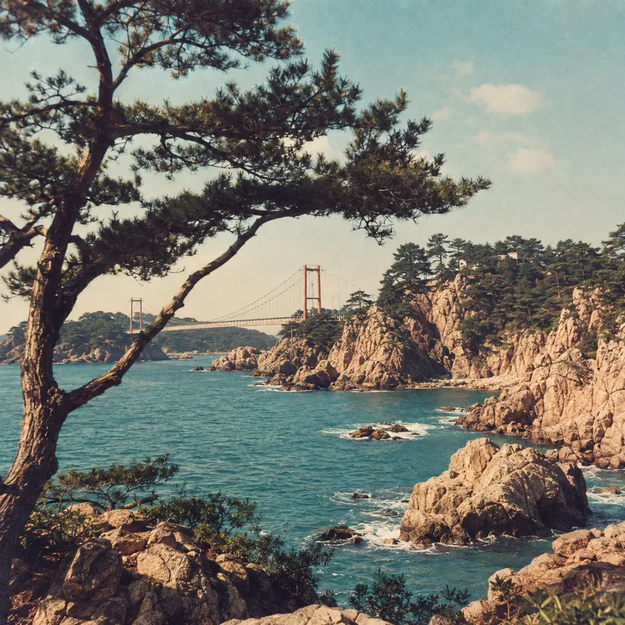
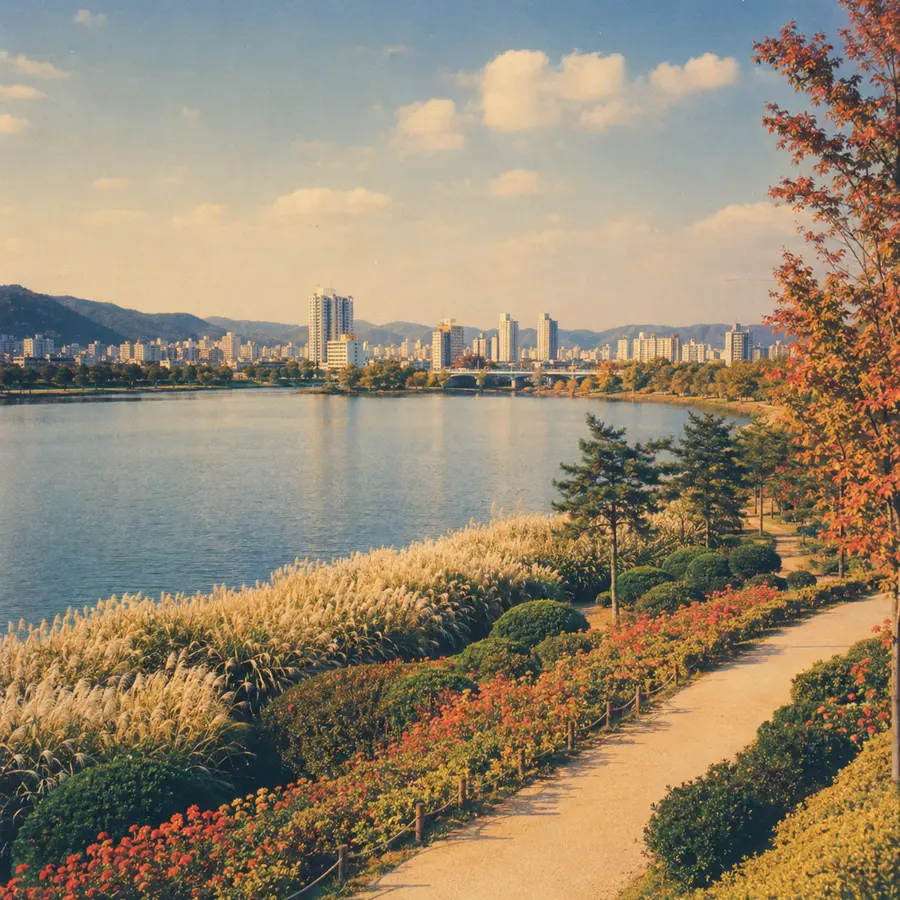

울산(통도사)역 픽업 안내
KTX PICK-UP기준 열차 도착11:10 울산(통도사)역
- 만남 장소
- 3번 출구 앞
- 버스 출발
- 오전 11시 20분
- 차량
- 45인승 버스
울산역 승하차 구역은 장시간 정차가 어려우며, 5분 이상 정차 시 단속될 수 있습니다. 버스 도착 즉시 탑승할 수 있도록 미리 준비해 주세요.
픽업 담당 지종열 실장 010-5595-4341
3번 출구 앞에서 파란색 YWCA 조끼를 착용한 실무자를 찾아주세요.

2026 전국YWCA 증경회장단 모임
오랜 인연과 반가운 마음을 품고
울산으로 오시는 길을 안내합니다.

MEETING POINT
등록 후 바로 오찬이 이어집니다
GETTING HERE
이용하시는 교통편을 확인해 주세요
울산역 승하차 구역은 장시간 정차가 어려우며, 5분 이상 정차 시 단속될 수 있습니다. 버스 도착 즉시 탑승할 수 있도록 미리 준비해 주세요.
픽업 담당 지종열 실장 010-5595-4341
3번 출구 앞에서 파란색 YWCA 조끼를 착용한 실무자를 찾아주세요.
고속 또는 시외버스터미널에서 머큐어앰버서더 울산으로 이동해 주세요. 호텔명이 검색되지 않으면 ‘강동몽돌해변’으로 요청해 주세요.
태화강역에서 머큐어앰버서더 울산으로 이동해 주세요. 호텔명이 검색되지 않으면 ‘강동몽돌해변’으로 요청해 주세요.
YOUR STAY
바다 가까이에서 편안한 하룻밤
MERCURE AMBASSADOR ULSAN
울산 북구 강동산하2로 7 · 052-980-1101
해돋이 명소인 강동몽돌해변이 도보 3분 거리에 있습니다. 객실 배정 및 개인별 안내사항은 행사 당일 안내드립니다.
TRAVEL ITINERARY
울산의 바다와 정원을 함께 만납니다
환영과 만남의 시간
울산 가을 나들이
① KTX 이용자 : 울산(통도사)역 이동 (약 30분)
② 자가용 이용자 : 호텔 이동 후 해산 (약 25분)
③ 그 외 교통편 : 개별 이동


편안한 신발을 꼭 착용해 주세요.
대왕암공원과 태화강국가정원은 도보 이동이며, 대왕암까지 가는 길에는 계단이 있습니다.
PACKING LIST
즐거운 울산 여행을 위한 준비물입니다
칫솔 · 치약 · 클렌징 등 개인 세면용품
울산 날씨
행사 일주일 전 최신 예보를 반영해 다시 안내드릴 예정입니다. 16일(수) 오전 9시부터 오후 3시까지 야외 일정이 있으니 편안한 복장과 신발을 준비하고, 바닷바람에 대비해 가벼운 겉옷도 챙겨 주세요.
울산 실시간 날씨 확인